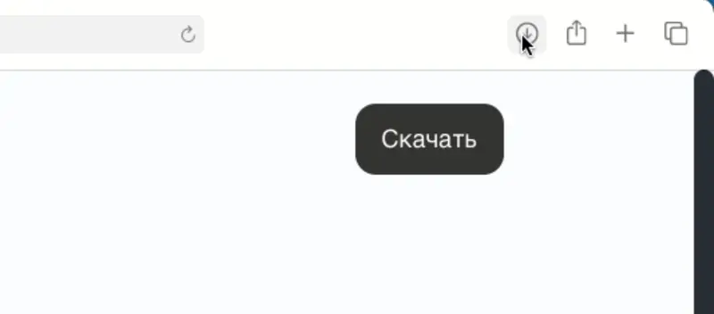
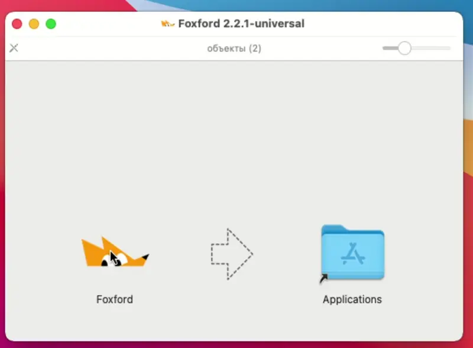
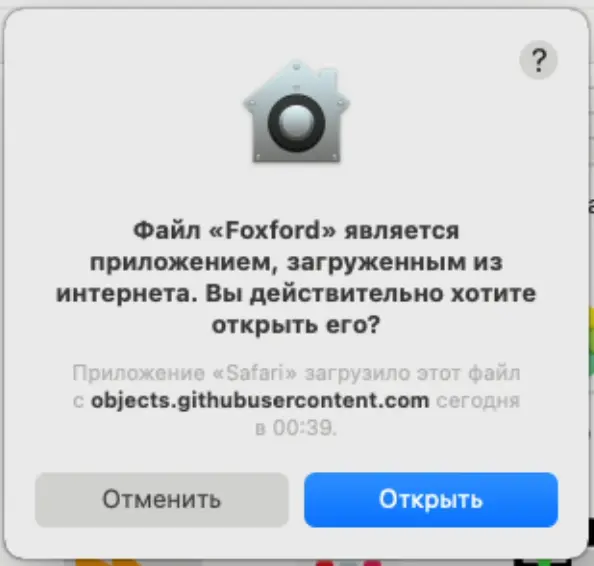
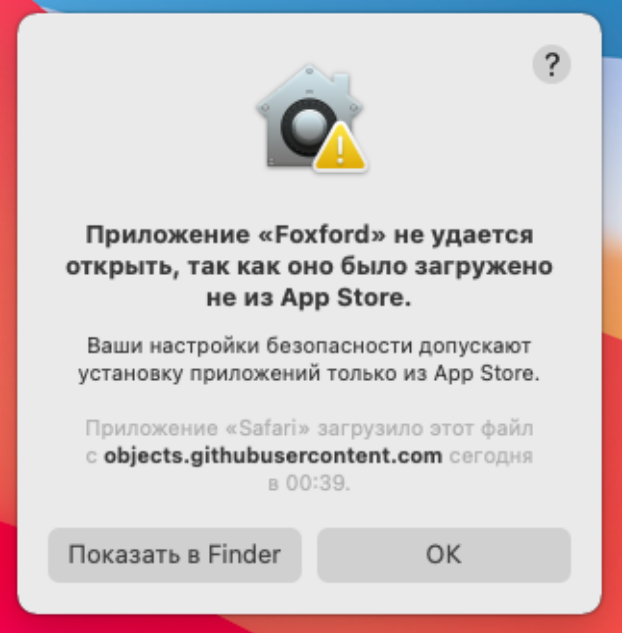
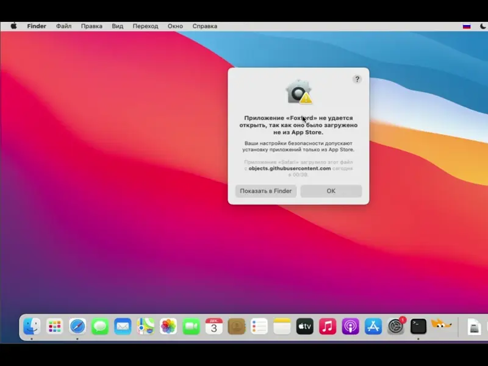
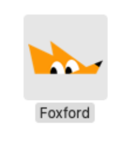

Установка на MacOS 🍎
Следуй инструкции, если система ругается на безопасность.
Шаг 1
Стандартная установка
Попробуй установить как обычное приложение:
- Запусти скачанный файл.
- Перетащи иконку в папку Applications (Программы).
- Найди приложение в "Программах" и нажми "Открыть".



Если не открывается
Разреши запуск в настройках
Если MacOS пишет, что "разработчик не установлен", сделай следующее:
- Зайди в Системные настройки (System Settings) ⚙️.
- Перейди в раздел Конфиденциальность и безопасность (Privacy & Security).
- Прокрути вниз до раздела "Безопасность".
- Там будет сообщение про FLauncher. Нажми кнопку "Подтвердить вход" или "Открыть все равно" (Open Anyway).
- В появившемся окне нажми "Открыть" и введи пароль от макбука.

Запасной вариант
Если настройки не помогли (Gatekeeper)
Используй этот способ, только если способ выше не сработал.
- Открой «Терминал» (Программы -> Утилиты -> Терминал).
- Скопируй и вставь команду:
- Нажми Enter, введи пароль (он невидимый) и снова Enter.
- Попробуй запустить приложение снова.
sudo spctl --master-disable
Видео-инструкция:

Готово
Запуск
В дальнейшем всегда запускай лаунчер через "Программы" (Applications).

Владельцам M1 / M2 / M3 / M4 / M5
Игра не стартует?
Внимание: Это касается только курса "Введение в программирование 1.16.5".
Если при нажатии кнопки "ИГРАТЬ" ничего не происходит, скачайте специальную версию и запустите 1.16.5: